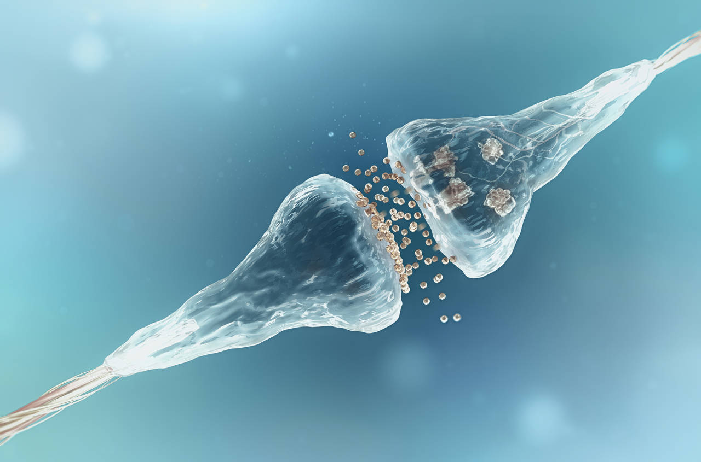

|  |
Dentro de nuestro cerebro, la sinapsis posibilita la conexión entre nuestras neuronas, un requisito indispensable para que nuestros impulsos nerviosos viajen a través de autopistas de redes neuronales. Sin ellas, nuestro cerebro estaría 'desconectado'.
El cerebro es un órgano tremendamente complicado y que ha requerido de miles de años para evolucionar hasta la complejidad actual. En su interior millones de neuronas se comunican entre ellas con un mecanismo químico esencial: la sinapsis.Básicamente se trata del impuso nervioso que se produce a través de las neuronas y que posibilita su comunicación. Y consiste, en esencia, en una descarga química traducida en una señal eléctrica que viaja a través de las redes neuronales de nuestro encéfalo a una velocidad vertiginosa.
El impulso nervioso recorre la neurona, y cuando llega a sus dendritas (una especie de brazos deshilachados), salta hasta la siguiente neurona mediante la sinapsis, que se produce a través del intercambio de unas sustancias químicas llamadas neurotransmisores.
|